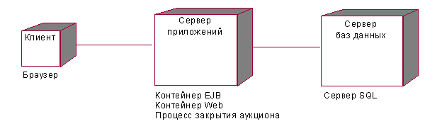
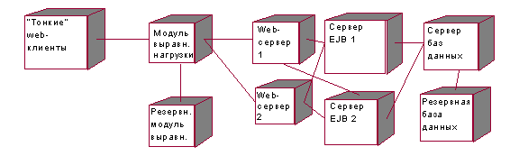
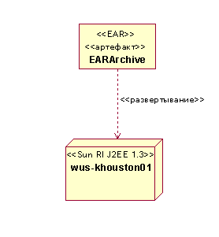

| Рекомендация: Описание распределения приложений J2EE |
 |
|
| Связанные элементы |
|---|
ВведениеПриложения J2EE обладают специфическими особенностями, благодаря которым возможно их гибкое развертывание. Ниже приведены конкретные указания по развертыванию модулей J2EE и приложений J2EE. Информация о стандартных конфигурациях развертывания J2EE приведена в разделе Концепция: конфигурации развертывания J2EE. Моделирование распределенияРаздел Задача: описать распределение содержит пример модели развертывания высокого уровня. Ниже приведен пример, относящийся к J2EE, в котором рассматривается приложение интерактивного аукциона.  В этом очень простом примере будет рассмотрен каждый из физических узлов и предложен набор контейнеров и процессов, которые могли бы работать на каждом узле. Однако развертывание J2EE может быть значительно более сложным. Рассмотрим другой, более сложный пример.  В этом примере распределитель нагрузки направляет запросы в кластер Web-серверов и серверов приложений. Приложение J2EE может также содержать несколько серверов имен JNDI, толстых клиентов приложений, серверов сообщений и т.п. При желании в диаграмму можно добавить протоколы, сетевое соединение, брандмауэры и т.п. Обратите внимание, что в предыдущем примере не перечисляются и не моделируются модули J2EE для каждого узла. Дело в том, что в этих примерах только один логический контейнер EJB и один контейнер Web. Все объекты EJB и EJB-JAR развертываются на всех серверах EJB. То же относится и к компонентам Web. Другая возможность моделирования распределения приложения J2EE - моделирование отображения модулей J2EE и/или приложений J2EE на конкретные серверы. Это показано на диаграмме развертывания UML в виде нарисованной зависимости (стереотипное <<развертывание>>), ведущей от архива к узлу. Следующая диаграмма демонстрирует эту возможность. В этом примере архив J2EE (EAR) отображается в узел (конкретный сервер приложений).  Вообще говоря, моделировать назначение архивов J2EE узлам и контейнерам необязательно. Однако в некоторых случаях необходимо, чтобы определенные элементы системы находились на узле с конкретными характеристиками (например, узле, поддерживающем базу данных, или узле, поддерживающем устаревшую систему). В таких случаях может оказаться полезным смоделировать развертывание модулей J2EE на конкретных узлах. Кроме того, моделирование отображения с архива на сервер особенно полезно, если существует автоматика, поддерживающая фактическое развертывание архивов на указанном сервере. |
© Copyright IBM Corp. 1987, 2006. Все права защищены.. |